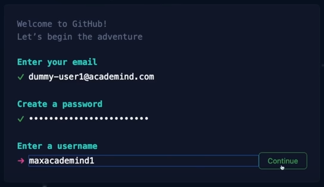
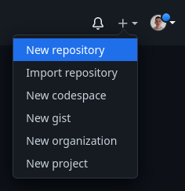
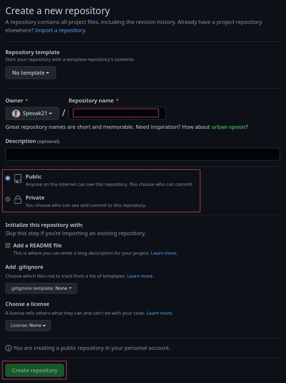
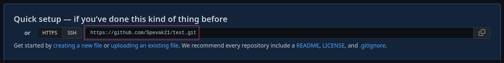
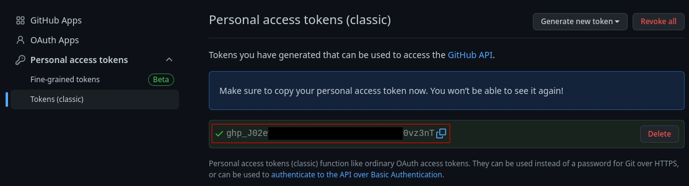
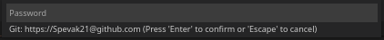

| Git commands | |
|---|---|
| git remote add <local_repo> <github_repo_url> | Connect local repository remote repository |
| git push | Upload local commits |
| git pull | Download remote commits |
Creating GitHub account
To create GitHub account go to https://github.com/, click on 'Sign up' and fill out the registration form.
Confirm account creation via email.
Creating new repository
To create new GitHub repository click + icon in top right corner and choose 'New repository'.
Fill in new repository name, choose 'Public' or 'Private' which determines who can see your repository, but no one can make edits without your permision.
Rest of the fields are optional.
After filling the form click 'Create repository' button on the bottom of the form.
Connecting git repository (local) to GitHub repository (cloud)
To connect remote repository to local repository use git remote add <local_repo_identifier> <github_repo_url>.
By convention <local_repo_identifier> or local repository name is usually 'origin'.
<github_repo_url> can be found on GitHub repository.
Generating GitHub token
Personal access token should be generated in GitHub to get password for pushing commits.
Click profile icon on GitHub / Settings / Developer settings (on the bottom of left sidebar) / Personal access tokens / Tokens (classic) / Generate new token / Generate new token (classic)
Enter your GitHub password
Write note (optional), set expiration, check 'repo' checkbox and click the 'Generate token' button on the bottom of the current page.
You will get token password that will be visible just once so save it somewhere. You can always generate new token if previous one expired or is lost.
Pushing local commits to the remote repository
First we need to set access permission for remote repository
To edit url of the remote repository use git remote set-url origin <github_repo_url>.
Right in front of github.com add GitHub username with '@' symbol at the end.
e.g. https://Spevak21@github.com/Spevak21/test.git
This url could be also edited in previous step with command git remote add <local_repo_identifier> <github_repo_url>.
To be able to push local commits to remote repository we need to set upstream branch.
To set upstream branch use git push <local_repo_identifier> <branch_name>.
If branch with given name exist it will push commit to it and if not it will create remote branch with that name and then push to it.
If we try to push commit after editing url we will be prompted for password.
Use password from token generating.